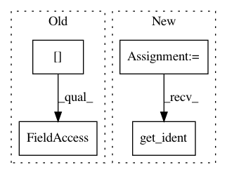

0f0c1da0bc38317c7d2e8f70759c347878c747e5,debug_toolbar/middleware.py,DebugToolbarMiddleware,process_request,#DebugToolbarMiddleware#,67
Before Change
request.urlconf = "debug_toolbar.urls"
self.debug_toolbars[request] = DebugToolbar(request)
for panel in self.debug_toolbars[request].panels:
panel.process_request(request)
def process_view(self, request, view_func, view_args, view_kwargs):
After Change
toolbar = DebugToolbar(request)
for panel in toolbar.panels:
panel.process_request(request)
self.debug_toolbars[thread.get_ident()] = toolbar
def process_view(self, request, view_func, view_args, view_kwargs):
toolbar = self.debug_toolbars.get(thread.get_ident())
In pattern: SUPERPATTERN
Frequency: 3
Non-data size: 4
Instances
Project Name: jazzband/django-debug-toolbar
Commit Name: 0f0c1da0bc38317c7d2e8f70759c347878c747e5
Time: 2011-03-28
Author: dcramer@gmail.com
File Name: debug_toolbar/middleware.py
Class Name: DebugToolbarMiddleware
Method Name: process_request
Project Name: jazzband/django-debug-toolbar
Commit Name: 0f0c1da0bc38317c7d2e8f70759c347878c747e5
Time: 2011-03-28
Author: dcramer@gmail.com
File Name: debug_toolbar/middleware.py
Class Name: DebugToolbarMiddleware
Method Name: process_view
Project Name: jazzband/django-debug-toolbar
Commit Name: 0f0c1da0bc38317c7d2e8f70759c347878c747e5
Time: 2011-03-28
Author: dcramer@gmail.com
File Name: debug_toolbar/middleware.py
Class Name: DebugToolbarMiddleware
Method Name: process_response